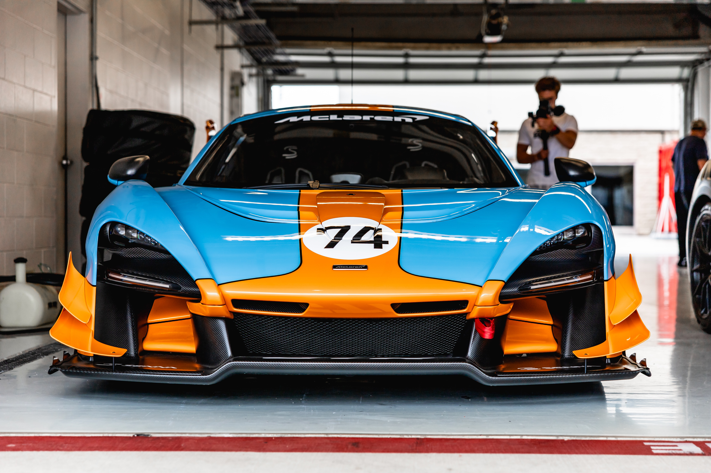

Earlier this year McLaren teamed up with Automation Anywhere to crunch the numbers to determine once and for all who the greatest McLaren drivers of all time are. After examining over 70 years’ worth of data the numbers are in, and shockingly the ultimate McLaren drivers are: Ayrton Senna and Lewis Hamilton. Well, maybe not that much of a shock. When posed to the public, they agree. Maybe these record holders don’t say all that much for artificial intelligence.
But to digress deeper into the fictional stands, the bot concluded that Kimi Räikkönen would win against Alain Prost. Moreover, the bot decided that Mika Häkkinen should be up against Lewis Hamilton for a spot in the final two – in contrary to the fans who voted for Niki Lauda.
The bot defends its ordering with ratings across six attributes: pace, composure, race craft, bravery, aggression, and determination. The first, pace, needs no explanation. Composure refers to the driver’s ability to push the car and perform under pressure. Race craft accounts for the driver’s ability to overcome challenges faced during the Grand Prix. Bravery measures the driver’s performance in dangerous conditions. Aggression is the tendency to vie for position during a Grand Prix, and lastly determination refers to the driver’s willingness to perform during adversity. The bot also accounts for those who had a Formula 1 World Drivers’ Championship, with a normalising adjustment of 5%.
The scores for each of these attributes was determined by a separate eight categories: dry racing, wet racing, qualifying, places gained, podiums, championships, fastest laps and performance vs car. When two drivers tied in points, the competitor with the fewest appearances was ranked higher.
Dry racing referred to the driver’s average position when racing in dry conditions; and wet racing was informed by their average position in wet conditions.
• Qualifying encompassed the average position when qualifying in all conditions.
• Places gained refers to the improvement in race position compared to the qualifying position.
• Podiums refers to the number of times the driver finished in the top three.
• Championships refers to the number of Formula 1 World Drivers Championships won.
• Fastest laps refer to the number of times the driver had the fastest lap in the Grand Prix.
• Finally, performance vs car refers to the number of times the driver finished higher in their rankings than the constructor.
These last two categories held less weight in informing the attributes as they were judged of lesser importance relative to the rest. This is because fastest lap can be heavily distorted by fuel load and tire choice, and while driver performance versus car performance is also a valid measure, it works against drivers with competitive cars. Additionally, wet racing and qualifying were awarded more weight to account for their challenging nature.

After compiling these factors, the bot ranked the drivers in the following order: Ayrton Senna, followed by Lewis Hamilton, Alain Prost, Fernando Alonso, Mika Häkkinen, Kimi Räikkönen, James Hunt, Jenson Button, Niki Lauda, Emerson Fittipaldi.
Agree? Disagree? Either way you’ll want a look at the process that informed this bold claim.
To start with, the bot extracted 10,000 rows of data from different sources and entered this into an SQL database. Queries were written in the database and some initial standings were devised based on the eight criteria. Differing weights and normalization was then accounted for to produce individual driver ratings across the six attributes which informed the final selection. The pool of data included every driver to have raced in Formula 1, that’s almost 800 drivers, competing over 70 years, racing in a variety of cars, on differing circuit types, in every weather condition. Two bots were used, one to gather the information onto the database, and the other to extract the output. The bot tasked with handling all of the data took one day to build. The enormity of the task left the idea of manually inputting high and dry. For context, for Jenson Button, it would take around 45 seconds to pull up his fastest lap data, whereby the bot processes this in a couple of seconds. The comparisons in their entirety would have taken a human seven working days, whereby the bot reached its calculation in just one hour.
A critic’s most obvious concern would be whether a bot is able to account for the myriad of nuances associated with comparisons in such a league. However, the bot, withstanding a statistical foundation, was able to account for the various differentiators that reflect one’s true quality of driving. Take Fernando Alonso for example. His disadvantage due to not having high-end cars at his disposal made it disproportionately harder for him to qualify, however by taking into account the positions gained relative to his grid slot his talent was credited in the output, earning him fourth place overall.
Whether you agree, disagree, are an avid watcher of the Grand Prix, or have just been pulled in by the promise of a controversial article, I think we can all agree that this automation is impressive. A bot that crunches a weeks-worth of work, takes an hour to build, and can handle nuance which most of us would consider to be a strictly human ability, is exciting!